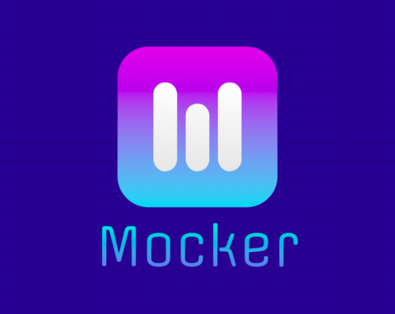
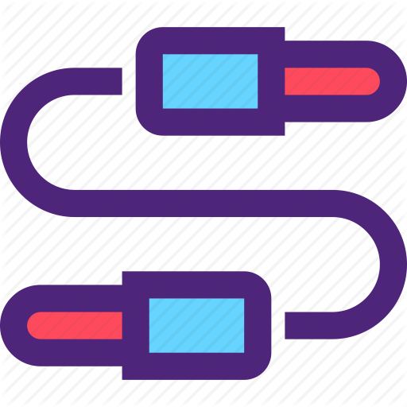

<!--The content below is only a placeholder and can be replaced.-->
<nav class="navbar navbar-custom">
  <div class="container">
    <div class="ui-g">
      <div class="ui-g-12">
        <a href="javascript:;" class="navbar-toggle" routerLink="home">
          </a>
      </div>
    </div>
  </div>

  <ul *ngIf="isLoggedIn" class="navbar-menu navbar-width">
    <li class="navbar-usuario">
      <a routerLink="/">
        <span style="color:whitesmoke"><b>HOME</b></span></a>
    </li>
    <li class="navbar-menuitem">
      <a routerLink="dashboard"
        ><b>Dashboard</b></a
      >
    </li>
    <li class="navbar-menuitem">
      <a routerLink="service-mock"
        ><b>Mock a Service</b></a
      >
    </li>
    <li class="navbar-menuitem">
      <a routerLink="edit-mock"
        ><b>Edit Mocks</b></a
      >
    </li>
  </ul>
</nav>

<router-outlet></router-outlet>
